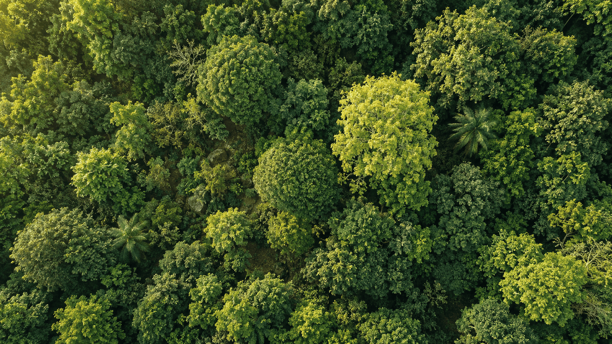
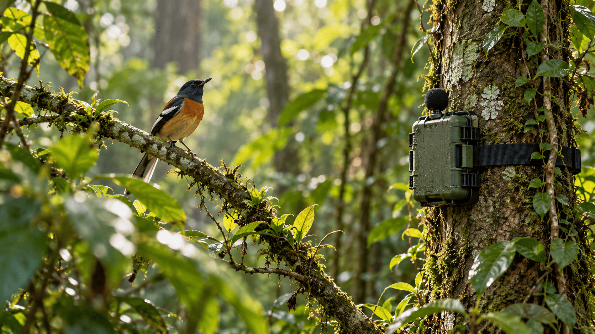
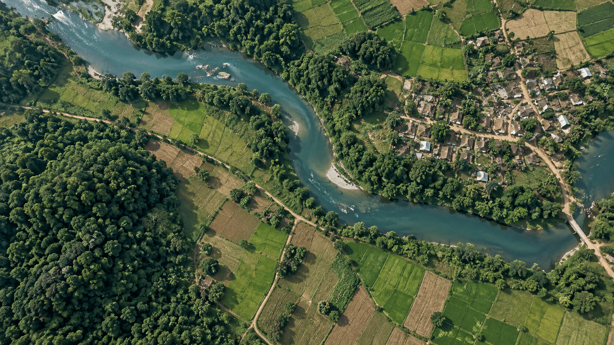
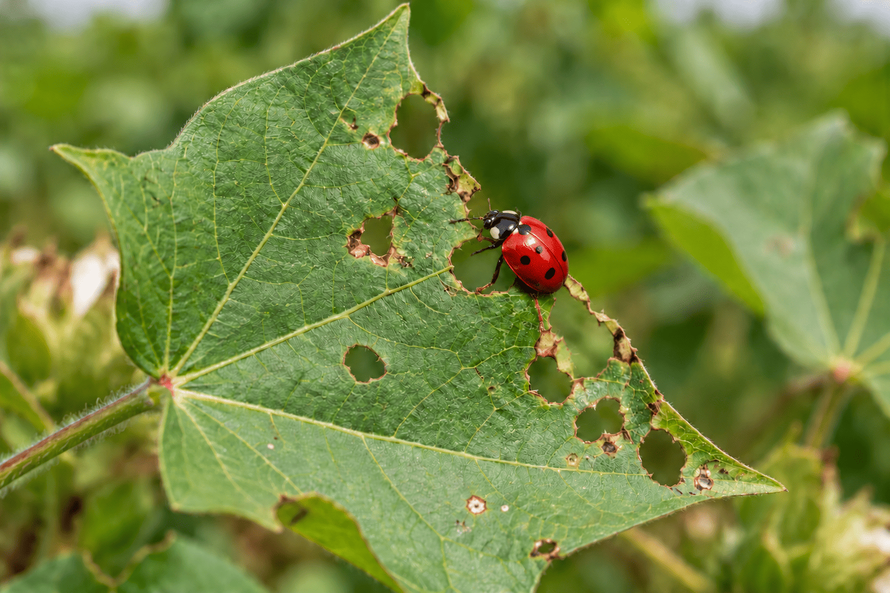
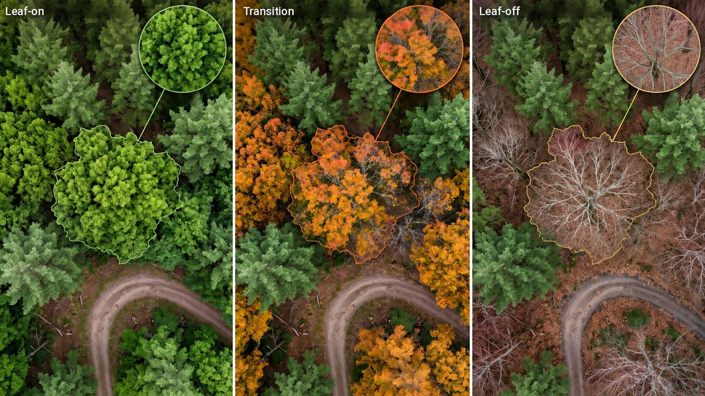

FOREST INTELLIGENCE
1

Drone Imagery Analysis
Habitat Characterization using Remote Image Sensory
Turn drone imagery into individual tree crowns and species maps.
Explore tools that turn environmental data into understanding. From individual tree crowns to the landscapes we share.
Explore the servicesTECHNOLOGY FOR NATURE
Tower Services is the group of small Docker apps that run compute: Drone, Bioacoustic (CEM), DIY LULC, and others. Each service does one job (tree crowns, audio, land cover). They share Airflow and STACD when a job needs orchestration.
THE SERVICE COLLECTION

Turn drone imagery into individual tree crowns and species maps.

Explore ecological monitoring through spots, species and networks.

Use satellite imagery to create land-cover maps for your study area.

Choose a crop, see where its pests are expected next week, and click any subdistrict for symptoms and management advice.

Upload repeated drone orthomosaics of one site to detect, track and classify every tree crown and map its phenology.
SUPPORTING YOUR WORK
Shared tools and guidance for working with the services.
FROM EXPLORATION TO ACTION
Read what each service does and what you need to get started.
Open the application and follow its guidance for your data or study area.
Review the output in the tool. For completed compute runs, browse the shared output files.
MORE ABOUT US
CoRE The CoRE Stack is an open initiative dedicated to empowering communities and researchers with geospatial data tools for sustainable land and natural resource management.
Centered on collaboration and participation, it is intended to contribute towards scientific decision-making, climate resilience, and improved social-ecological sustainability.
A large network of computer scientists, open-source product developers, environmental research organizations, civil society organizations, and philanthropic donors have come together to build the CoRE stack as a truly digital public infrastructure built and managed by the public.